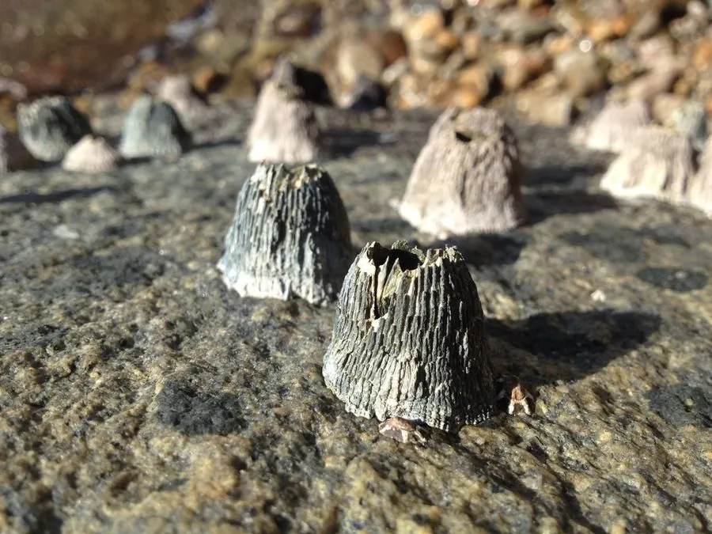

甲壳动物 · 动物界
日本笠藤壶 Tetraclita japonica

外壳呈火山状的常见藤壶，密集附着在岩礁上，涨潮时伸出蔓足滤食，是海岸潮间带常见的固着动物。
- 分类
- 门节肢动物门纲蔓足纲目无柄目科笠藤壶科属笠藤壶属
- 栖息环境
- 潮间带中上部岩礁，成群密集附着
- 地理分布
- 日本、朝鲜半岛和中国沿海
- 保护级别
- 暂无评估
物种志
日本笠藤壶的壳呈圆锥形，像一座小火山，壳口较小，壳板灰褐或紫灰色，直径约 2–3 cm。成体固着在岩石上，不能移动，壳内伸出羽状蔓足。
它生活在潮间带中上部的岩礁上，常成群密集成片附着，涨潮时伸出蔓足滤食浮游生物和有机颗粒，退潮时紧闭壳口防止失水。日本笠藤壶分布于日本、朝鲜半岛和中国沿海，是典型的潮间带固着生物。它的幼体浮游一段时间后寻找岩石附着，变态为成体后终生不再移动。藤壶附着会增加船体和管道阻力，是污损生物；但在自然海岸，它们为其他小动物提供栖息空间，也是海鸟和蟹类的食物。退潮时成片的藤壶壳口紧闭，能反射阳光，十分醒目。
形态与习性
- 食性滤食浮游生物和有机颗粒
- 体型壳径约 2–3 cm
- 外形壳呈圆锥形，像一座小火山
- 生活史幼体浮游后附着，成体终生固着
- 适应退潮时紧闭壳口，防止体内水分流失
- 影响船体和管道上的污损生物之一
趣味知识
- 日本笠藤壶的外壳像一座小火山，密集附着在岩石上。
- 它小时候会游泳，找到岩石后就固定下来，终生不再移动。
- 藤壶会附着在船底和管道上，是常见的污损生物。